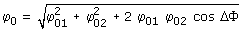
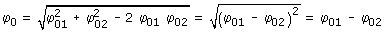
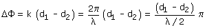

Se produce una interferencia cuando llegan al mismo punto
dos ondas luminosas de igual color
La interferencia se calcula sumando las ecuaciones de las ondas particularizadas
para dicho punto,
la amplitud de la interferencia viene dada por:

| ΔΦ |
Diferencia de las fases de las ondas en el punto de encuentro |
Si ΔΦ es un multiplo par de π, cos ΔΦ = 1

La amplitud de la interferencia es la suma de amplitudes de las ondas (Interferencia constructiva)
Si ΔΦ es un multiplo impar de π, cos ΔΦ = -1

La amplitud de la interferencia es la resta de amplitudes de las ondas (Interferencia destructiva)
Si los focos luminosos están en fase, la diferencia de fase de las ondas en el punto de interferencia solo dependerá de la diferencia de las distancias de cada foco al punto (Diferencia de camino)

Según (d1 - d2) sea multiplo par o impar de λ/2, la interferencia será constructiva o destructiva respectivamente